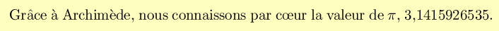
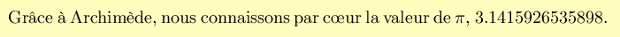
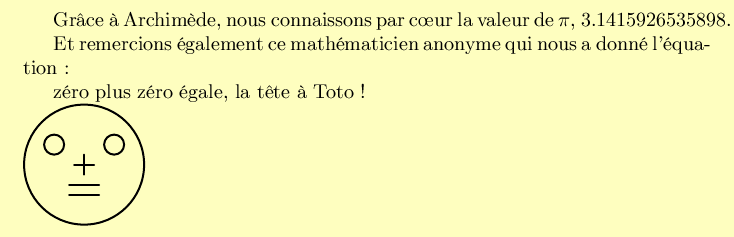
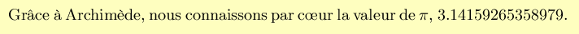
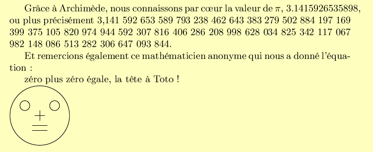

Ou comment utiliser LATEX en optimisant le facteur de plaisir.
Commençons par l'aspect pénible de l'utilisation de tout logiciel scriptable, les encodages.
Supposons que l'on veuille écrire
et que, contrairement à ce que l'on déclare dans le document, on n'arrive pas à se rappeler la valeur numérique de π. Selon le cas, nous avons l'ASCII à 7 bits, ISO-8859 ou UTF-8.
Remarque : la couleur jaunâtre ne vient pas du fait que j'ai imprimé mon fichier LATEX sur du papier vieilli. J'ai tout simplement effectué une copie d'écran, que j'ai coloriée ensuite avec The GIMP pour faire ressortir ces copies d'écran par rapport au texte de la présentation.
Avec les premières versions de TEX, il fallait coder en ASCII 7 bits. Ce n'était pas agréable à manipuler.
fichier ex1.tex
\documentclass[a4paper]{article}
\begin{document}
Gr\^ace \`a Archim\`ede, nous connaissons
par c\oe{}ur la valeur de $\pi$,
% que j'aime a faire apprendre un nombre utile aux sages
% 123 1 1234 1 12345 123456789 12 123456 12345 123 12345
3,1415926535.
\end{document}
Pour les « œ » dans l'exemple ci-dessus et pour les « ç », il y a deux façons de coder. La première façon, qui me déplaît, est c\oe ur et re\c cu, le blanc servant à marquer la fin de la commande \oe (o-e liés) ou de la commande \c (cédille), mais sans que cela représente la fin d'un mot. La seconde, celle que je préfère, est c\oe{}ur et re\c{c}u, dans laquelle la fin de la commande est marquée par autre chose qu'un blanc, en l'occurrence une ou deux accolades, ce qui fait que les blancs sont ainsi toujours des séparations de mots. Il n'y a pas de paramètre en ligne de commande ni d'option à insérer dans le fichier source pour utiliser l'une ou l'autre de ces deux syntaxes. Elles sont toujours reconnues dans un fichier LATEX.
À partir de la version 3 de TEX, il a été possible d'écrire en ISO-8859-1, ou en latin-1 si vous préférez.
fichier ex2.tex
% -*- encoding: iso-8859-1 -*- \documentclass[a4paper]{article} \usepackage[T1]{fontenc} \begin{document} Grâce à Archimède, nous connaissons par c\oe{}ur la valeur de $\pi$, % que j'aime à faire apprendre un nombre utile aux sages % 123 1 1234 1 12345 123456789 12 123456 12345 123 12345 3,1415926535. \end{document}
Le commentaire avec -*- permet de dire à Emacs que l'encodage est ISO-8859-1, mais LATEX n'en tient aucun compte. L'utilisation du module fontenc sert à indiquer à LATEX que l'on utilise des polices compatibles avec l'encodage ISO-8859-1, mais Emacs n'en tient aucun compte. Quant à Vim, des utilisateurs de cet éditeur m'ont signalé que Vim détecte automatiquement l'encodage du fichier. Cette détection automatique fonctionne mieux que l'utilisation de la mode line. Je n'ai pas vérifié, car le clone de vi que j'utilise est Emacs en mode Viper.
Maintenant, les voyelles accentuées et les « c » cédille peuvent se taper sans mal, mais il reste un problème avec les « o-e » liés.
Mais maintenant, dans la deuxième décennie du XXIe siècle, c'est Unicode et l'UTF-8 qui s'imposent.
fichier ex3.tex
% -*- encoding: utf-8 -*- \documentclass[a4paper]{article} \usepackage[T1]{fontenc} \usepackage[utf8]{inputenc} \begin{document} Grâce à Archimède, nous connaissons par cœur la valeur de $\pi$, % que j'aime à faire apprendre un nombre utile aux sages % 123 1 1234 1 12345 123456789 12 123456 12345 123 12345 3,1415926535. \end{document}
Le problème des « o-e » liés est résolu. Normalement, on devrait même pouvoir taper le π (U+3C0) directement dans le texte, mais je n'y suis pas arrivé. Toujours est-il que cela ne nous donne pas la valeur numérique de π pour autant.
Même si TEX et LATEX sont des langages de programmation, il faut reconnaître que leur syntaxe n'est pas agréable. Par exemple, c'est assez difficile de faire des boucles, c'est difficile de calculer des formules, c'est difficile d'avoir la valeur numérique de π. Heureusement, il y a...
LuaTEX, également connu sous le nom de LuaLATEX, est une refonte du moteur TEX, qui incorpore un certain nombre d'améliorations.
En effet, le rédacteur du document a accès à un interprétateur Lua dans le corps du document. Exemple :
fichier ex4.tex
% -*- encoding: utf-8 -*-
\documentclass[a4paper]{article}
\usepackage[T1]{fontenc}
\usepackage[utf8]{luainputenc}
\begin{document}
Grâce à Archimède, nous connaissons
par cœur la valeur de $\pi$,
\directlua{tex.sprint(math.pi)}.
\end{document}
La génération du document se fait par :
lualatex ex4
tout simplement. Remarquons que le résultat est légèrement différent, nous disposons de quelques décimales supplémentaires.
Quelques remarques.
En fait, l'utilisation de l'interpréteur Lua incorporé ne se limite pas à générer des fragments de source LATEX. Il est possible d'écrire des « fonctions de rappel » (callbacks), pour intervenir dans le fonctionnement du moteur, par exemple pour modifier les règles de césure, ou pour travailler sur les « attributs » (une nouveauté du moteur LuaTEX). Réservé aux gourous et aux sorciers, moi je n'en ai pas besoin pour m'amuser en composant des documents.
LuaTEX est encore en version béta. La version stable est promise pour 2012. Je pense que si l'on se limite comme moi aux fonctionnalités standards de LATEX avec en plus l'ajout de morceaux de texte générés par Lua, mais que l'on ne cherche pas à écrire de callbacks, il n'y a pas de crainte à avoir pour d'éventuelles régressions ou incompatibilités.
Un paradoxe : les auteurs de Lua font clairement savoir qu'ils ne prévoient pas d'ajouter le support d'Unicode à Lua. Lua fait quand même attention à ne pas bousiller votre chaîne de caractères, qu'il considère lui comme une chaîne d'octets. Mais les fonctions qui travaillent sur les caractères, comme les découpages de chaîne et les expressions régulières, considèrent que l'encodage est ISO-8859, voire ASCII. Le paradoxe est que pour LuaLATEX, le seul encodage prévu est justement UTF-8, qui n'est pas et qui ne sera jamais l'encodage natif de Lua.
Il y a des interférences entre l'analyse du source par LATEX et celle par l'interpréteur Lua. Vous aurez beau coder votre programme Lua sur plusieurs lignes, avec une indentation soignée, Lua recevra un « uniligne » (one-liner). Et donc, en particulier, si vous commentez votre script ainsi :
\directlua{-- on affiche la valeur de pi
tex.sprint(math.pi)
}
Lua ne recevra qu'un immense commentaire et ne fera donc rien. Cela dit, vous pouvez utiliser le pourcent pour les commentaires :
\directlua{% on affiche la valeur de pi
tex.sprint(math.pi)
}
Le corollaire de cette remarque est qu'il est très difficile d'utiliser l'opérateur modulo et les expressions régulières dans un script Lua inclus dans un document LuaLATEX.
La solution préconisée consiste donc à séparer une partie du code Lua dans un fichier externe qui sera analysé uniquement par l'interpréteur Lua et non par l'interpréteur LATEX. Oublions pour un moment LATEX et faisons uniquement du Lua. Pour afficher la valeur de π en se basant sur un poême mnémotechnique et non pas sur des fonctions mathématiques, il est possible d'écrire le programme suivant :
fichier ex5.lua
-- -*- encoding: latin-1 -*-
--[[
Fonction pour obtenir un nombre à partir d'un poême mnémotechnique
lg_part_ent : nombre de chiffres de la partie entière
poeme : chaîne de caractères contenant le texte du poême
renvoie une chaîne représentant le nombre
]]
local transco = { ["à"] = "a", ["è"] = "e", ["é"] = "e", ["ê"] = "e",
};
function mnemo_to_num(lg_part_ent, poeme)
-- élimination des accents
poeme = string.gsub(poeme, ".", transco);
-- extraire les chiffres du nombre
local nombre = "";
for mot in string.gmatch(poeme, "%a+") do
nombre = nombre .. (string.len(mot) % 10)
end
-- séparer la partie entière et la partie décimale
local part_ent = string.sub(nombre, 1, lg_part_ent)
local part_dec = string.sub(nombre, lg_part_ent + 1, string.len(nombre))
-- insérer des blancs pour former des groupes de trois chiffres
part_ent = string.reverse(part_ent)
part_ent = string.gsub(part_ent, "(%d%d%d)", "%1 ")
part_ent = string.reverse(part_ent)
part_dec = string.gsub(part_dec, "(%d%d%d)", "%1 ")
-- reconstituer le nombre
nombre = part_ent .. "," .. part_dec
return nombre
end
fichier ex5-bis.lua
-- -*- encoding: latin-1 -*-
dofile "ex5.lua";
print(mnemo_to_num(1, [[
Que j'aime à faire apprendre un nombre utile aux sages,
Immortel Archimède, artiste, ingénieur,
Qui, de ton jugement, peut priser la valeur ?
Pour moi, ton problème eut de pareils avantages.
]] ))
Cet exemple vous permet de voir comment appeler un script Lua externe dans un autre script Lua. Il vous montre également la syntaxe Lua avec « [[ » puis « ]] » pour les chaînes de caractères contenant des sauts de ligne (la syntaxe \n est autorisée dans une chaîne délimitée par des doubles quotes, mais c'est pénible si les lignes sont longues et nombreuses). Voici ce que cela donne avec LuaLATEX :
fichier ex5.tex
% -*- encoding: utf-8 -*-
\documentclass[a4paper]{article}
\usepackage[T1]{fontenc}
\usepackage[utf8]{luainputenc}
\begin{document}
Grâce à Archimède, nous connaissons
par cœur la valeur de $\pi$,
\directlua{
dofile "ex5.lua";
tex.sprint(mnemo_to_num(1, "
Que j'aime a faire apprendre un nombre utile aux sages,
Immortel Archimede, artiste, ingenieur,
Qui, de ton jugement, peut priser la valeur ?
Pour moi, ton probleme eut de pareils avantages.
"))}
\end{document}
Il y a deux choses à remarquer. Tout d'abord, la chaîne transmise ne contient aucun caractère accentué parce que le script ex5.lua attend une chaîne en ISO-8859-1 (qu'il convertit immédiatement en ASCII, au moins pour les lettres) et le document ex5.tex est codé en UTF-8. D'autre part, la chaîne transmise est délimitée par des doubles-quotes parce que, de toutes façons, les sauts de ligne sont perdus au moment où LuaLATEX exécute le code Lua.
Ainsi donc, il est possible de disposer d'un langage algorithmique puissant et agréable lors de la composition d'un document. Les exemples ci-dessus sont simplistes, mais dans la réalité, il est possible d'avoir une logique de traitement plus évoluée, avec des boucles par exemple, ou bien des accès à une base de données ou à Internet. Le peu de Lua que je connais pour l'instant me montre que c'est un langage sympathique et agréable, mais je continue à préférer Perl.
En fait, ce n'est pas un interpréteur qui est inclus dans LuaLATEX, mais deux ! Il y a en effet également un interpréteur MetaPost en plus de l'interpréteur Lua. MetaPost est un langage de script pour dessins, inspiré de METAFONT, langage de définition de polices de caractères. À l'époque de LATEX, c'était un exécutable séparé mpost qui interprétait un fichier source séparé toto.mp et générait un ou plusieurs fichiers PostScript toto.1, toto.2, toto.3 et ainsi de suite. L'inclusion de dessins dans un document LATEX nécessitait ainsi le lancement de plusieurs commandes, donc il fallait écrire un script ou un makefile pour enchaîner la commande mpost de génération des dessins avec la commande latex de génération du document. Avec LuaLATEX, tout se fait à l'intérieur du même fichier source :
fichier ex6.tex
% -*- encoding: utf-8 -*-
\documentclass[a4paper]{article}
\usepackage[T1]{fontenc}
\usepackage[utf8]{luainputenc}
\usepackage{luamplib}
\begin{document}
Grâce à Archimède, nous connaissons
par cœur la valeur de $\pi$,
\directlua{tex.sprint(math.pi)}.
Et remercions également ce mathématicien anonyme
qui nous a donné l'équation~:
zéro plus zéro égale, la tête à Toto~!
\begin{mplibcode}
beginfig(1);
z1 = (-15, 10); % oeil gauche
z2 = ( 15, 10); % oeil droit
rayon = 5;
largeur_egale = 1.5 * rayon;
grosrayon = 30;
% zéro
draw ((0, rayon) .. (rayon, 0) .. (0, - rayon) .. (- rayon, 0) .. cycle) shifted z1;
% plus
draw (0, rayon) -- (0, - rayon);
draw (- rayon, 0) -- (rayon, 0);
% zéro
draw ((0, rayon) .. (rayon, 0) .. (0, - rayon) .. (- rayon, 0) .. cycle) shifted z2;
% égale
draw ((-largeur_egale, 0) -- (largeur_egale, 0)) shifted (0, -2 * rayon);
draw ((-largeur_egale, 0) -- (largeur_egale, 0)) shifted (0, -3 * rayon);
% la tête à Toto
draw (grosrayon, 0) .. (0, grosrayon) .. (- grosrayon, 0) .. (0, - grosrayon) .. cycle;
endfig;
\end{mplibcode}
\end{document}
Et la génération se fait en une seule commande :
lualatex ex6
Je réitère la conclusion du paragraphe précédent. Ainsi donc, il est possible de disposer de deux langages algorithmiques puissants et agréables lors de la composition d'un document. Les exemples ci-dessus sont simplistes, mais dans la réalité, il est possible d'avoir une logique de traitement plus évoluée, avec des boucles par exemple, aussi bien en Metapost qu'en Lua, et des accès à une base de données ou à Internet en Lua. Le peu de Lua que je connais pour l'instant me montre que c'est un langage sympathique et agréable et d'autre part j'aime bien Metapost, mais je continue à préférer Perl.
Heureusement, il y a...
Perltex n'est pas un nouveau moteur TEX, concurrent de LuaTEX. C'est un script « de glu » faisant communiquer un moteur TEX avec un exécutable Perl.
Le fichier source a l'allure suivante :
fichier ex7.tex
% -*- encoding: utf-8 -*-
\documentclass[a4paper]{article}
\usepackage[T1]{fontenc}
\usepackage[utf8]{inputenc}
\usepackage{perltex}
\perlnewcommand{\pinum}[0]{ 4 * atan2(1, 1) }
\begin{document}
Grâce à Archimède, nous connaissons
par cœur la valeur de $\pi$, \pinum.
\end{document}
Et le lancement se fait ainsi :
perltex --nosafe ex7.tex
si vous voulez avoir la sortie en format DVI ou bien ainsi :
perltex --latex=pdflatex --nosafe ex7.tex
si vous voulez avoir la sortie en PDF. Et vous obtenez
Quelques remarques.
Comme vous pouvez le deviner, les instructions Perl définies par \perlnewcommand sont compilées et exécutées par un eval. Par défaut, elles sont lancées dans un « bac à sable » (sandbox), grâce au module Safe.pm. Le paramètre --nosafe permet de désactiver ce module, dans la mesure où l'auteur du document est le même que l'auteur du script Perl. Si votre document LATEX fait appel à un script dont l'origine est douteuse, alors il faut utiliser l'option --safe. Il est possible d'adopter une attitude intermédiaire avec un ou plusieurs paramètres --permit:xxx.
Par opposition à LuaLATEX, vous ne pouvez plus utiliser MetaPost de façon intégrée, vous êtes de nouveau obligés d'écrire deux fichiers séparés et de lancer deux commandes à la suite. Ou bien alors, programmez vos dessins avec GD.pm, GIMP.pm, Image::Magick ou un module similaire et incluez le dessin obtenu dans votre document.
En revanche, vous avez de nouveau le choix entre un document codé en ISO-8859 ou codé en UTF-8. Mais en 2012, qui veut revenir à ISO-8859 ?
Avec PerlTEX, vous pouvez utiliser la syntaxe des environnements, pour définir un script « avant » et un script « après », encadrant une portion de texte. Tandis qu'avec LuaLATEX, seul le fonctionnement en commande est possible.
Faut-il choisir LuaLATEX et supporter les inconvénients de Lua en mode uniligne ? Faut-il choisir PerlTEX et se lamenter de l'absence de MetaPost ? Non ! J'ai créé un programme qui réunit les avantages des deux outils, ce qui permet d'éviter les inconvénients. Cet outil, une variante de LATEX combinant un interpréteur MetaPost, un interpréteur Perl et un interpréteur Lua, s'appelle Metaperlualatex.
Son principe de fonctionnement tient en une ligne shell :
perltex --latex=lualatex $*
En fait, l'implémentation est un peu plus compliquée, mais vous avez ici l'essentiel du programme. Un document ressemble à :
fichier ex8.tex
% -*- encoding: utf-8 -*-
\documentclass[a4paper]{article}
\usepackage[T1]{fontenc}
\usepackage[utf8]{luainputenc}
\usepackage{perltex}
\usepackage{luamplib}
\perlnewcommand{\mnemotonum}[2]{ my ($lg_part_ent, $mnemo) = @_;
use v5.10;
$mnemo =~ s/\\[`']//g;
my @mots = $mnemo =~ /(\w+)/g;
my $nombre = join '', map { length($_) % 10 } @mots;
my $partie_ent = reverse substr($nombre, 0, $lg_part_ent);
$partie_ent =~ s/(\d\d\d)/$1 /g;
$partie_ent = reverse $partie_ent;
my $partie_dec = substr($nombre, $lg_part_ent);
$partie_dec =~ s/(\d\d\d)/$1 /g;
$partie_dec =~ s/\s+$//;
return "$partie_ent,$partie_dec"; }
\begin{document}
Grâce à Archimède, nous connaissons
par cœur la valeur de $\pi$,
\directlua{tex.sprint(math.pi)},
ou plus précisément
\mnemotonum{1}{Que j'aime à faire apprendre un nombre utile aux sages
Immortel Archimède, artiste, ingénieur,
Toi de qui Syracuse aime encore la gloire,
Soit ton nom conservé par de savants grimoires !
Jadis, mystérieux, un problème bloquait
Tout l'admirable procédé, l'oeuvre grandiose
Que Pythagore découvrit aux anciens Grecs.
Ô quadrature ! vieux tourment du philosophe !
Insoluble rondeur, trop longtemps vous avez
Défié Pythagore et ses imitateurs.
Comment intégrer l'espace plan circulaire ?
Former un triangle auquel il équivaudra ?
Nouvelle invention : Archimède inscrira
Dedans un hexagone ; appréciera son aire
Fonction du rayon. Pas trop ne s'y tiendra :
Dédoublera chaque élément antérieur ;
Toujours de l'orbe calculée approchera ;
Définira limite ; enfin l'arc, le limiteur
De cet inquiétant cercle, ennemi trop rebelle !
Professeur, enseignez son problème avec zèle !...
}.
Et remercions également ce mathématicien anonyme
qui nous a donné l'équation~:
zéro plus zéro égale, la tête à Toto~!
\begin{mplibcode}
beginfig(1);
z1 = (-15, 10); % oeil gauche
z2 = ( 15, 10); % oeil droit
rayon = 5;
largeur_egale = 1.5 * rayon;
grosrayon = 30;
% zéro
draw ((0, rayon) .. (rayon, 0) .. (0, - rayon) .. (- rayon, 0) .. cycle) shifted z1;
% plus
draw (0, rayon) -- (0, - rayon);
draw (- rayon, 0) -- (rayon, 0);
% zéro
draw ((0, rayon) .. (rayon, 0) .. (0, - rayon) .. (- rayon, 0) .. cycle) shifted z2;
% égale
draw ((-largeur_egale, 0) -- (largeur_egale, 0)) shifted (0, -2 * rayon);
draw ((-largeur_egale, 0) -- (largeur_egale, 0)) shifted (0, -3 * rayon);
% la tête à Toto
draw (grosrayon, 0) .. (0, grosrayon) .. (- grosrayon, 0) .. (0, - grosrayon) .. cycle;
endfig;
\end{mplibcode}
\end{document}
La génération du document se fait par :
mpll --nosafe ex8
Alors qu'il existe de très bons débugueurs pour Perl, la méthode habituellement utilisée consiste à insérer des print (ou variantes comme warn) dans le programme à débuguer. C'est cette méthode que j'utilise pour le débugage de documents metaperlualatex.
fichier ex9.tex
% -*- encoding: utf-8 -*-
\documentclass[a4paper]{article}
\usepackage[T1]{fontenc}
\usepackage[utf8]{luainputenc}
\usepackage{perltex}
\usepackage{luamplib}
\perlnewcommand{\cmdperl}[0]{ print "\ndébug Perl\n"; return "Hello" }
\begin{document}
\cmdperl{}
\luadirect{print();print("débug Lua"); tex.sprint("world")},
\message{débug Latex}
\end{document}
Ce qui donne dans la sortie standard :
This is LuaTeX, Version beta-0.50.0-2010010505 [ coupé ] (/usr/share/texmf-texlive/tex/luatex/luamplib/luamplib.lua)) (./ex9.pipe) (./ex9.pipe) (./ex9.frpl) (./ex9.aux) (./ex9.pipe d'ebug Perl ) (./ex9.pipe) (./ex9.frpl) débug Lua débug Latex [1{/var/lib/texmf/fonts/map/pdftex/updmap/pdftex.map}] (./ex9.aux) ) [ coupé ]
Néanmoins, pour la partie Perl, vous pouvez consulter le fichier ex9.lgpl, qui vous donne le journal (log) des échanges entre LATEX et Perl :
############################### PERL CODE ################################
sub latex_cmdperl { print "\nd\'ebug Perl\n"; return "Hello" }
%%%%%%%%%%%%%%%%%%%%%%%%%%%%%% LATEX RESULT %%%%%%%%%%%%%%%%%%%%%%%%%%%%%%
############################### PERL CODE ################################
latex_cmdperl ();
%%%%%%%%%%%%%%%%%%%%%%%%%%%%%% LATEX RESULT %%%%%%%%%%%%%%%%%%%%%%%%%%%%%%
Hello
Le source de l'outil mpll se trouve sur Github, sur https://github.com/jforget/metaperlualatex. Dans le même dépôt, vous trouverez cette présentation ainsi qu'un document complet mettant à profit Perl et MetaPost (et un tout petit peu Lua). Ce document explique le phénomène que l'on peut observer au mois de décembre. Pendant l'automne, le soleil se lève de plus en plus tard et se couche de plus en plus tôt. Cela n'étonne personne. De même, au printemps, le soleil se lève de plus en plus tôt et se couche de plus en plus tard. Aucun paradoxe là non plus. Mais pendant quelques jours au mois de décembre, le soleil se lève de plus en plus tard et se couche également de plus en plus tard. En d'autres termes, le jour commence à gagner sur la nuit au moment du coucher du soleil, mais continue à perdre sur la nuit au moment du lever du soleil. Ce document, destiné à expliquer ce paradoxe, fait appel à DateTime::Event::Sunrise comme vous auriez pu deviner.
À l'origine, j'ai installé LuaLATEX en utilisant le gestionnaire de paquets d'Ubuntu 10.4 Lucid Lynx. La version obtenue datait de janvier 2010. Avec cette version, certains dessins MetaPost ont provoqué l'erreur :
! MetaPost capacity exceeded, sorry [main memory size=5000].
Après avoir posé une question et obtenu une réponse sur la liste de diffusion, j'ai installé la version de fin mai 2012 de LuaTEX et le problème a été résolu.
Avant d'envoyer ce message, j'avais contrôlé si les exemples de figures MetaPost figurant dans le manuel écrit par John Hobby produisaient cette erreur. J'avais reproduit ce dépassement de capacité et j'avais quelques autres erreurs. Ces erreurs ne sont pas encore corrigées avec la version de mai 2012.
Une autre remarque, à propos des éditeurs de texte. Comment font-ils pour afficher un source contenant à la fois du LATEX, du Lua, du Perl et du MetaPost ? Tout d'abord, concernant le coloriage syntaxique, je l'ai désactivé dans mon fichier de configuration .emacs avec :
(global-font-lock-mode -1)
Vous me connaissez, j'estime que les stabilisateurs pour deux-roues sont réservés aux enfants apprenant à monter à vélo. Lorsque l'on a un vélo de compèt', les stabilisateurs se révèlent plus une gêne qu'un avantage. C'est la même chose avec le coloriage syntaxique. Lorsque l'on connaît au minimum le langage utilisé, il est préférable de voir tout le source affiché avec un bon contraste en noir sur blanc, plutôt que de voir un source bariolé avec les chaînes de caractères en jaune sur fond blanc, les mots-clés en bleu-ciel sur fond blanc et les commentaires en vert pâle sur fond blanc.
Néanmoins, mon éditeur de texte adopte le mode LATEX, en raison entre autres de l'extension .tex de mon fichier source. Donc, chaque fois que je tape une double-quote U+22, Emacs la transforme en deux apostrophes U+27 U+27 ou en deux apostrophes inverses U+60 U+60, en fonction du caractère précédent. Très pratique lorsque l'on tape du LATEX, mais très pénible lorsque l'on tape du Lua ou du Perl. Dans ce cas, je passe en fundamental-mode.
Je tiens à remercier
Merci également à l'équipe de rédaction du Petit Archimède, pour le supplément au numéro 64-65, dans lequel j'ai puisé mon inspiration poétique.
Le programme mpll, ainsi que les scripts Perl et Lua inclus dans le document, sont diffusés sous les mêmes termes que Perl : GPL et Artistic License.
Cette présentation est diffusée sous la Licence Creative Commons Attribution - Pas d'Utilisation Commerciale - Partage à l'Identique 3.0 non transposé : CC BY-NC-SA.